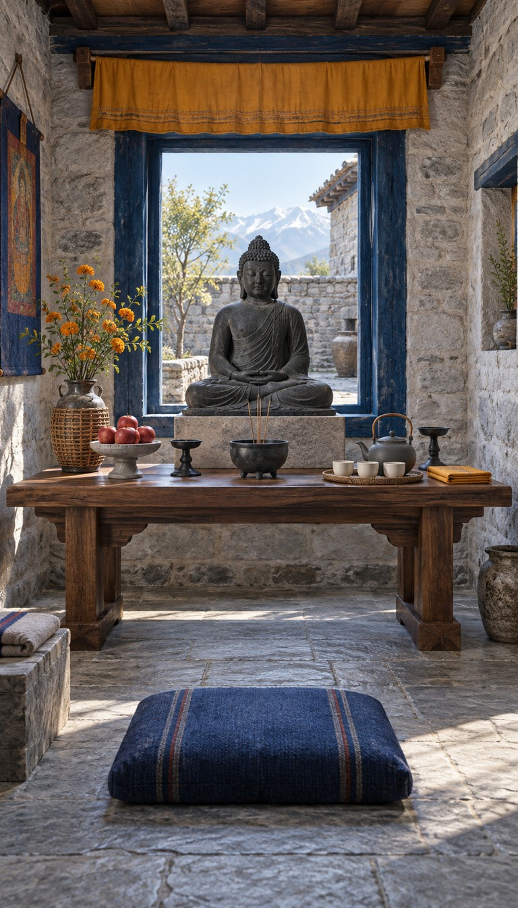
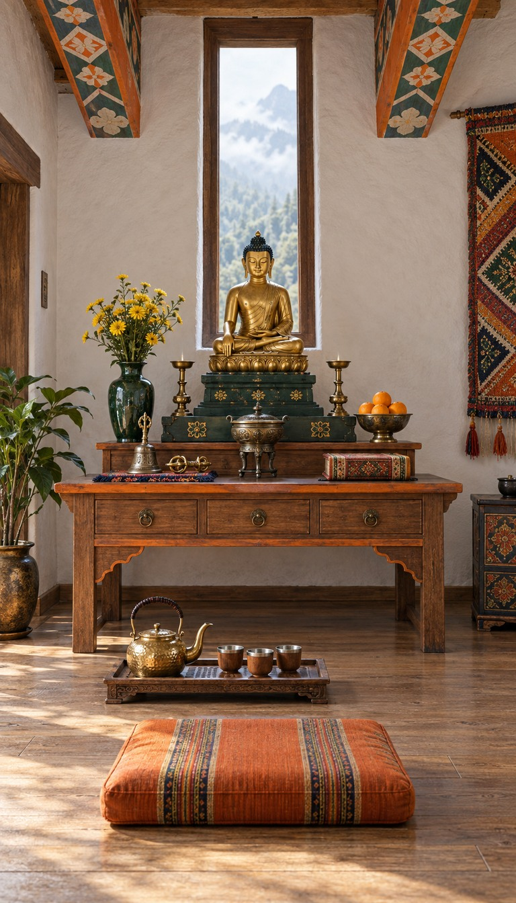
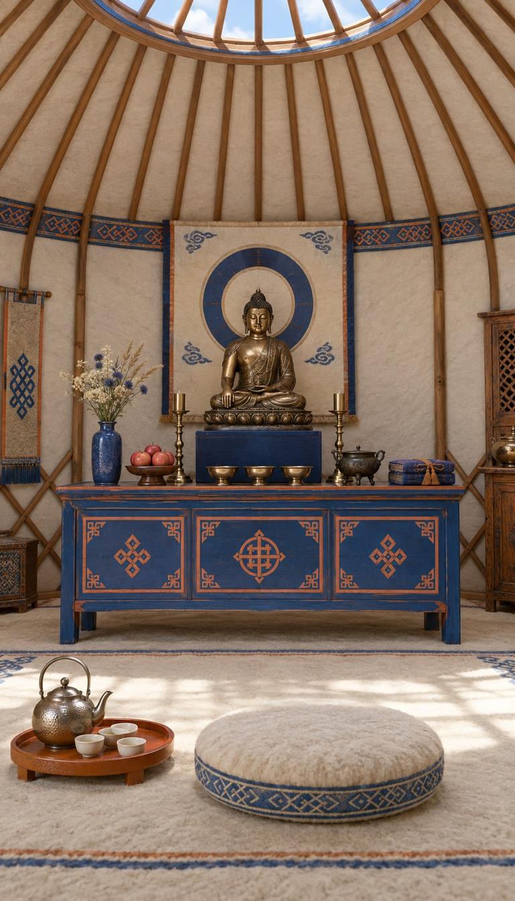
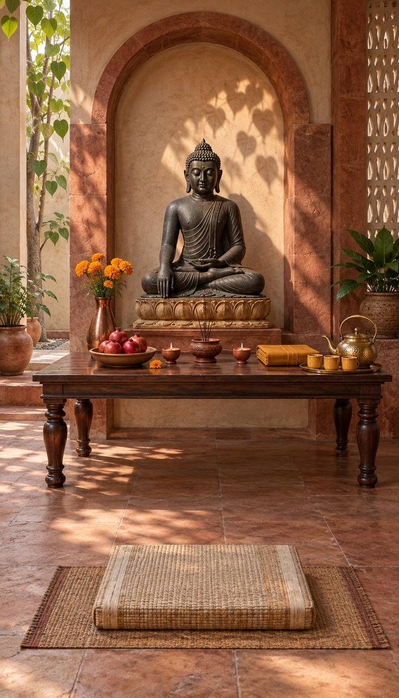
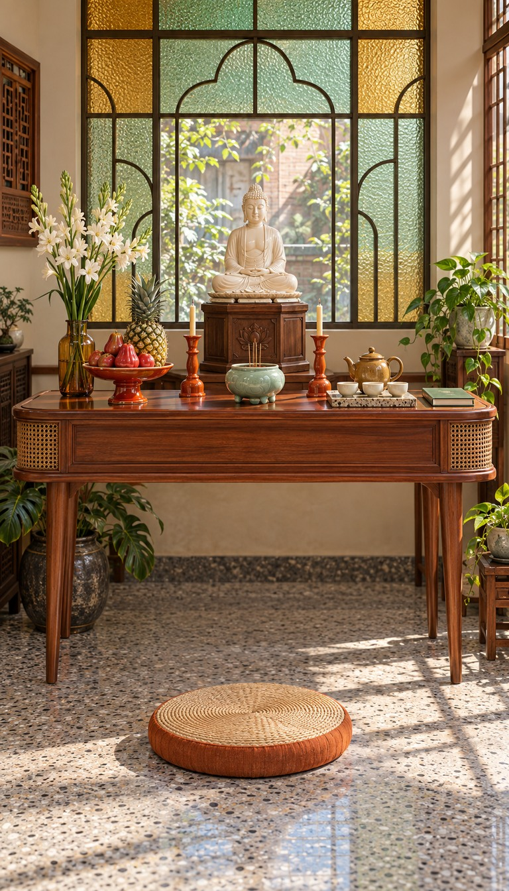

BuddhaHome · 第二批 20 套原创主题
T22 · 阿瑜陀耶砖光佛堂
泰国 · 赤陶拱廊／失蜡青铜／夕阳赭红

T23 · 南泰贝母漆艺佛堂
泰国 · 贝母镶嵌／孔雀蓝／柔和侧光

T24 · 伊善蓝染竹编佛堂
泰国 · 靛蓝织物／编竹／乡野晨光

T25 · 顺化珐琅庭院佛堂
越南 · 法蓝珐琅／皇城赭黄／庭院天光

T26 · 北圻木刻陶香佛堂
越南 · 菠萝蜜木／棕釉陶／红瓦光影

T27 · 湄公河藤影凉廊佛堂
越南 · 水葫芦编织／青蓝百叶／河风

T28 · 净土折扉金屏佛堂
日本 · 佛坛折扉／黑漆描金／扇形光背

T29 · 密教绳结紫檀道场
日本 · 紫藤织物／密教法具／柱列节奏

T30 · 濑户青蓝陶艺佛堂
日本 · 钴蓝流釉／灰白陶墙／雕塑式陶器

T31 · 燃灯纸莲丹青佛堂
韩国 · 纸莲灯／丹青梁彩／粉绿春光

T32 · 粉青月壶山房佛堂
韩国 · 粉青沙器／韩纸／灰青朴白

T33 · 琅勃拉邦剪金佛堂
老挝 · 剪金生命树／桑皮纸／银供器

T34 · 高棉砂岩林影佛堂
柬埔寨 · 砂岩雕刻／银浮雕／雨林绿影

T35 · 蒲甘干漆金箔佛堂
缅甸 · 竹胎朱漆／干漆造像／芒果金光

T36 · 康提赤陶鼓廊佛堂
斯里兰卡 · 康提织纹／黄铜灯／栗红木柱

T37 · 蓝窗石院静修堂
尼泊尔 · 灰石院墙／靛蓝窗／灰陶与织毡

T38 · 彩梁织锦云山佛堂
不丹 · 彩绘斗梁／织锦门帘／黄铜法器

T39 · 草原毡帐静心佛堂
蒙古 · 毡帐穹顶／蓝橙漆木／黄铜供碗

T40 · 菩提树影赤砂佛堂
印度 · 赤砂石／菩提叶影／黄陶铜器

T41 · 台南磨石玻璃佛堂
中国台湾 · 磨石子／压花玻璃／铁花窗